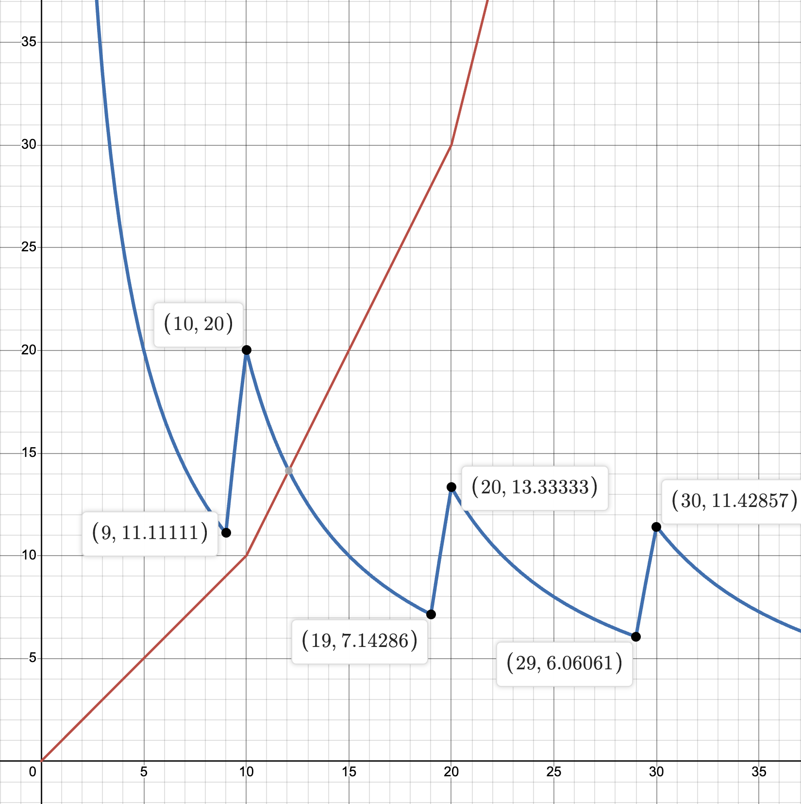

All variables in Exponential Idle Theories can be classified into 3 types: Direct Multiplication Variables, Stepwise Variables and Linear Variables. Which type of variable a given variable is can be mostly determined simply by looking at it. If it is in the form \(b^L\) it is a Direct Multiplication Variable, but if it is just a number by itself, then it is a Stepwise Variable or a Linear variable
In order to tell the difference between stepwise and linear variables there are a few indicators:
However, there indicators are not perfect. \(c_1\) in FP grows linearly up to 100, and even though it stays an integer, the linear growth and has a low value (it only growns by 1 per level keeping it small), it is actually a stepwise variable (it has an unusually high step length)
For example:
All variables have the same cost model (exponential), the difference between stepwise and direct multi variables is what happens when you buy an upgrade
Direct multi variables are very simple. When you buy an upgrade, what happens is exactly what you expect to happen. The index in increased by one, raising it's value by a factor of it's base
Stepwise variables ar more complicated than Direct Multi Variables. It is impossible to know how a stepwise variable will increase just by looking at it, one needs to examine the code in order to know how it will increase. Stepwise variables can be described with 3 numbers, their initial value (I), their step length (S) and their base power (B)
Note that "initial value (I)" is not commonly used, as due to the nature of the game it does not actually affect any strategy, so it is usually ignored. Furthermore, it does not have a name in code - "initial value" is just a term I personally use
A stepwise variable starts with a value of 0. Every time you upgrade it, it will increase by I, it's initial increment. Every S levels, the amount it increases per level increases by a factor of B
This is easier explained with an example. Let's create a variable \(c_1\). This variables will have an initial of 1, a base of 2, and a step of 10. At level 0 it has a value of 0. Every upgrade it increases by I, which is 1. so at level 1 it has a value of 1, at level 2 it has a value of 2, and so on. At level 10 it has a value of 10, but something else happens. It's step length is 10, so now the amount it increases per level increases by a factor of B, in this case doubling. now it increases by 2 per level. At level 11 our variable now hold a value of 12, up to a value of 30 at level 20, where it doubles again, and increases by 4 now per level
| Level | Value | Level | Value | Level | Value |
|---|---|---|---|---|---|
| 0 | 0 | 10 | 10 | 20 | 30 |
| 1 | 1 | 11 | 12 | 21 | 34 |
| 2 | 2 | 12 | 14 | 22 | 38 |
| 3 | 3 | 13 | 16 | 23 | 42 |
| 4 | 4 | 14 | 18 | 24 | 46 |
| 5 | 5 | 15 | 20 | 25 | 50 |
| 6 | 6 | 16 | 22 | 26 | 54 |
| 7 | 7 | 17 | 24 | 27 | 58 |
| 8 | 8 | 18 | 26 | 28 | 62 |
| 9 | 9 | 19 | 28 | 29 | 66 |
As before, in an attempt for a better explanation, I made my own nomenclature (sorry about that). Here is the universally accepted nomenclature
When talking about stepwise variables, one usually uses 2 numbers to describe it: its base and its step. It is written like this (B, S)
for example, the variable is described before is a (2, 10) stepwise variable
Whilst the inital value of a stepwsie variable affect the theory and could affect variable competition, when variable are multiplied together - as they are in most theories, the intial value can be factored out and ignored. The inital increment value does not increase how much a variable increases per level as a percentage. For example, (2,10) with an inital of one goes 1, (+100%) 2, (+50%) 3; and the same variable with an initial of 10 goes 10, (+100%) 20, (+50%) 30. Different numbers, same percentage difference
The easiest way to determine what stepwise variable you are working with is to look into the code. The code of all main and official custom theories are at ConicGames' github. Main theories are found in the SDK here and official custom theories are found here
In ALL official custom theories, all stepwise variables are (2, 10) stepwise variables. Furthermore, there are no linear variables
(2, 10) stepwise variables increase by on average 7% per upgrade, and in all listed strats on this website are bought at a 10x ratio to doubling variables (direct multi variables with a base of 2). However, due to the nature of stepwise variables, sometimes it is wise not to follow this ratio.
First of all, stepwise variables work differently at the very beginning. The first upgrade is usually free and required, as it moves it from 0 to 1. Very early upgrades are usually unusually powerful. For example, the level 3 -> 4 upgrade increases it by 33%, much more than the 7% average increase. More important though is the non smooth nature of stepwise power functions
Stepwise power functions have a jump at each step length. This jump means that just after getting the increase to their amount per level they are stronger. For example, a (2, 10) stepwise variable would be slightly stronger just after each multiple of 10, 10 -> 11 is stornger than 9 -> 10
s(x) is the (2, 10) stepwise power function. Red: \(s(x)\), Blue: \(100\left(\frac{b\left(x+1\right)}{b\left(x\right)}-1\right)\), i.e. the amount s(x) increases when you buy an upgrade starting from upgrade x, as a percentage
In this graph the blue line represents approximately how much s(x) increases after buying a level, start from level x. As you can see this spike at multiples of 10 (or more generally multiples of S) and goes down from there. From this, one can see that stepwise variables are more power right a multiple of S and weakest rgiht before it
With this knowledge one can adjust their strategy. For (2, 10) stepwise variables specifically, the recommended ratio to buy them (usually 10) relative to a doubling variable lower just after a multiple of 10 and higher just before one. For example, having \(c_1\) and \(c_2\) be stepwise and doubling variables respectively, if \(c_1\) is level 341 and costs 4.86e94 and \(c_2\) is level 57 and costs 3.91e95, we would usually save for \(c_2\), but in this case, because \(c_1\) is just after a multiple of 10, one should actually buy \(c_1\) first.
More specifically, the ratio is 5x at a multiple of 10 increasing to 10x at 5 more then a multiple of 10, and 15x at 9 more than a multiple of 10.
They increase by a set amount per level. woa